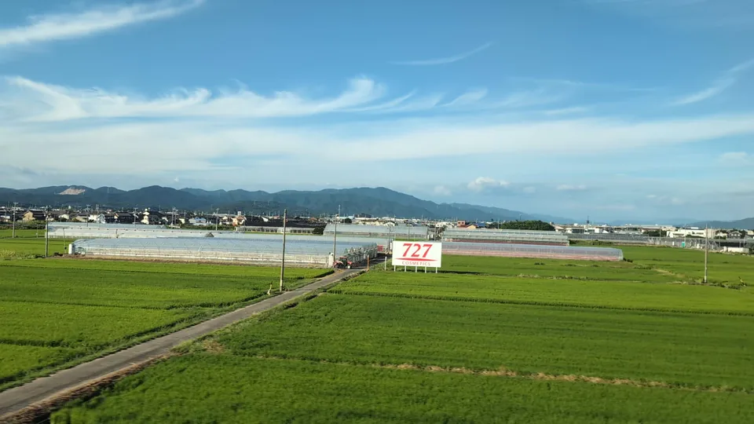

01 / EVERYDAY JAPAN
Begin with the shape you remember
These are not tourist attractions placed for the train. They are working fields, factories, sports facilities and sacred markers — ordinary parts of Japan that become surprising when they flash past the window.

What are those bright green rows?
The answerShizuoka's tea fields
Tea bushes are trimmed into long, rounded hedges that follow the rise and fall of the hills. In spring, the first new leaves turn the fields a vivid yellow-green — one of the signature landscapes of Shizuoka.
Look again. And the fans? The propellers above the rows are frost-protection fans. On cold spring nights they blow relatively warmer air down toward the tender new buds.

Why are there so many chimneys below Mt. Fuji?
The answerFuji City's paper mills
Fuji is one of Japan's great papermaking towns. Its mills grew around abundant groundwater from Mt. Fuji and industrial water from the Fuji River; the white plumes you notice are steam from a working industrial landscape.
Look again. Keep watching Seat E after Mt. Fuji. About a minute before Shin-Fuji, the foreground changes from fields to chimneys, tanks and pipes.

What are those long silver tunnels?
The answerGreenhouses — “vinyl houses” in Japanese
Frames covered with transparent agricultural film shelter crops from rain and cold and make growing conditions easier to manage. The repeated arches can look silver-white when they catch the sun.
Look again. This cluster appears on Seat E just after Toyohashi, in Shimosawaki, Toyokawa. Japanese people commonly call these vinyl houses, although modern covers may use several kinds of plastic. The crop inside cannot be identified reliably from the train.
How Japan defines agricultural houses (MAFF, Japanese) ↗Greenhouse farming around Toyohashi (Japanese) ↗
What are those giant green nets?
The answerA golf driving range — uchippanashi in Japanese
The nets stop golf balls from reaching nearby homes and roads. In Japanese cities, many ranges stack hitting bays on two or three floors, so a place to practise golf can look like a giant cage.
Look again. This one flashes past Seat E shortly before Kiyosu Castle. The format is not unique to Japan, but it is a common city sight here. Uchippanashi (打ちっぱなし) roughly means “keep hitting.”
Golf ranges in Japan ↗A first-time visitor asks what it is ↗

Why is there a giant red gate in the fields?
The answerNangu Taisha's Grand Torii
A torii marks the approach to a Shinto shrine. This one stands about a kilometre from Nangu Taisha itself and spans the road below, announcing the entrance long before the sanctuary comes into view.
Look again. At more than 21 metres tall, it flashes past Seat A between Gifu-Hashima and Maibara. The low farmland around it makes the red gate look even larger.
Look for them on your next ride
Choose your train to see when each view should pass, or browse the full field guide for castles, signs, rivers and more.
About these views
Every photo on this page was taken through a Tokaido Shinkansen window. Times are Nozomi-based estimates; start watching a little early.